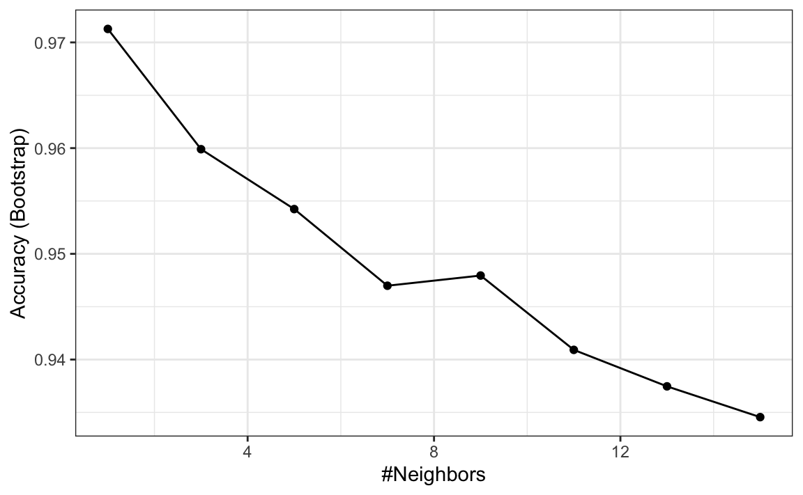
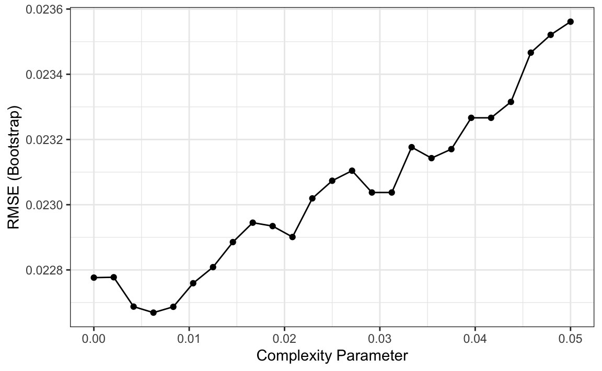
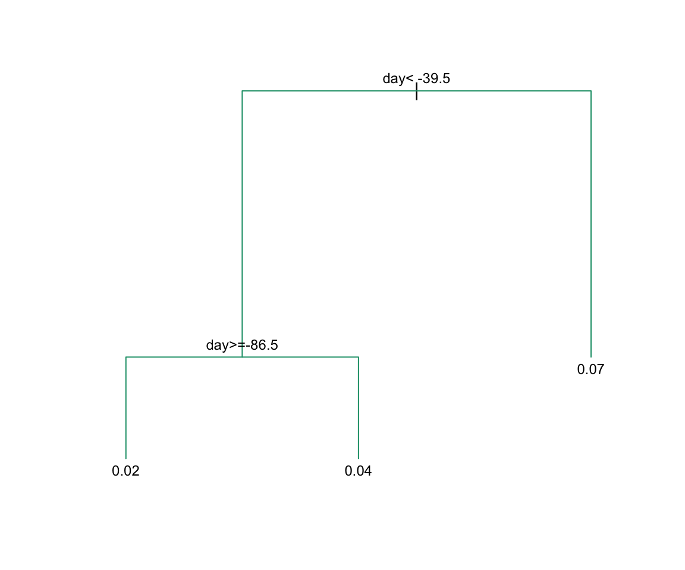
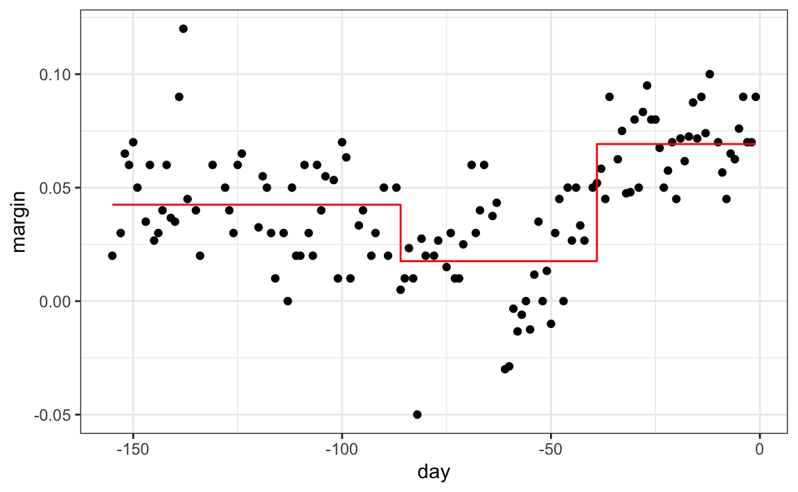
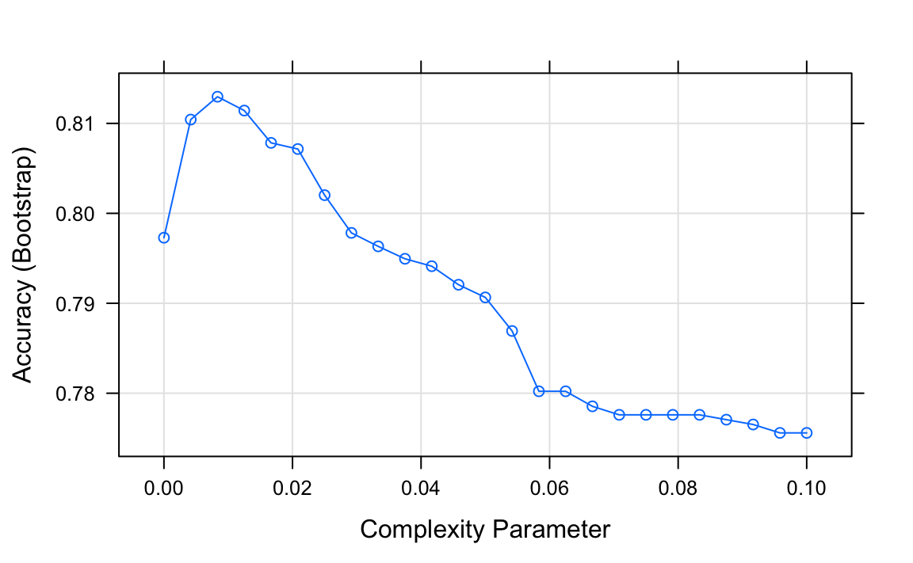
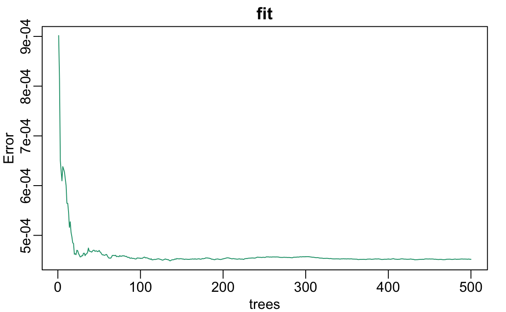
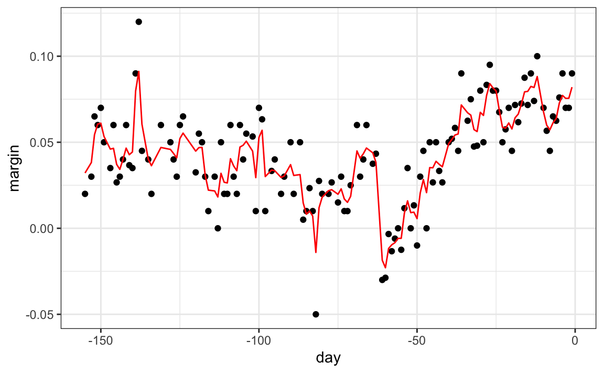

Capítulo 31 Ejemplos de algoritmos
Hay docenas de algoritmos de machine learning. Aquí ofrecemos algunos ejemplos que abarcan enfoques bastante diferentes. A lo largo del capítulo usaremos los dos datos de dígitos predictores presentados en la Sección 27.8 para demostrar cómo funcionan los algoritmos.
31.1 Regresión lineal
La regresión lineal puede considerarse un algoritmo de machine learning. En la Sección 27.8, demostramos cómo la regresión lineal a veces es demasiada rígida para ser útil. Esto es generalmente cierto, pero para algunos desafíos funciona bastante bien. También sirve como enfoque de partida: si no podemos mejorarlo con un enfoque más complejo, probablemente querremos continuar con la regresión lineal. Para establecer rápidamente la conexión entre la regresión y el machine learning, reformularemos el estudio de Galton con alturas, una variable continua.
library(HistData)
set.seed(1983)
galton_heights <- GaltonFamilies %>%
filter(gender == "male") %>%
group_by(family) %>%
sample_n(1) %>%
ungroup() %>%
select(father, childHeight) %>%
rename(son = childHeight)Supongamos que tienen la tarea de construir un algoritmo de machine learning que prediga la altura del hijo \(Y\) usando la altura del padre \(X\). Generemos sets de evaluación y de entrenamiento:
y <- galton_heights$son
test_index <- createDataPartition(y, times = 1, p = 0.5, list = FALSE)
train_set <- galton_heights %>% slice(-test_index)
test_set <- galton_heights %>% slice(test_index)En este caso, si solo estuviéramos ignorando la altura del padre y adivinando la altura del hijo, adivinaríamos la altura promedio de los hijos.
Nuestro error cuadrático medio es:
¿Podemos mejorar? En el capítulo de regresión, aprendimos que si el par \((X,Y)\) sigue una distribución normal de dos variables, la expectativa condicional (lo que queremos estimar) es equivalente a la línea de regresión:
\[ f(x) = \mbox{E}( Y \mid X= x ) = \beta_0 + \beta_1 x \]
En la Sección 18.3, introdujimos los mínimos cuadrados como método para estimar la pendiente \(\beta_0\) y el intercepto \(\beta_1\):
Esto nos da una estimado de la expectativa condicional:
\[ \hat{f}(x) = 52 + 0.25 x \]
Podemos ver que esto realmente provee una mejora sobre adivinar.
31.1.1 La función predict
La función predict es muy útil para aplicaciones de machine learning. Esta función toma como argumentos el resultado de funciones que ajustan modelos como lm o glm (aprenderemos sobre glm pronto) y un data frame con los nuevos predictores para los cuales predecir. Entonces, en nuestro ejemplo actual, usaríamos predict así:
Utilizando predict, podemos obtener los mismos resultados que obtuvimos anteriormente:
predict no siempre devuelve objetos del mismo tipo; depende del tipo de objeto que se le envíe. Para conocer los detalles, deben consultar el archivo de ayuda específico para el tipo de objeto de ajuste que se está utilizando. predict es un tipo de función especial en R (denominada función genérica) que llama a otras funciones según el tipo de objeto que recibe. Así que si predict recibe un objeto producido por la función lm, llamará predict.lm. Si recibe un objeto producido por la función glm, llamará predict.glm. Estas dos funciones son similares pero con algunas diferencias. Pueden obtener más información sobre las diferencias leyendo los archivos de ayuda:
Hay muchas otras versiones de predict y muchos algoritmos de machine learning tienen una función predict.
31.2 Ejercicios
1. Cree un set de datos con el siguiente código.
n <- 100
Sigma <- 9*matrix(c(1.0, 0.5, 0.5, 1.0), 2, 2)
dat <- MASS::mvrnorm(n = 100, c(69, 69), Sigma) %>%
data.frame() %>% setNames(c("x", "y"))Use el paquete caret para dividirlo en un set de evaluación y uno de entrenamiento del mismo tamaño. Entrene un modelo lineal e indique el RMSE. Repita este ejercicio 100 veces y haga un histograma de los RMSE e indique el promedio y la desviación estándar. Sugerencia: adapte el código mostrado anteriormente así:
y <- dat$y
test_index <- createDataPartition(y, times = 1, p = 0.5, list = FALSE)
train_set <- dat %>% slice(-test_index)
test_set <- dat %>% slice(test_index)
fit <- lm(y ~ x, data = train_set)
y_hat <- fit$coef[1] + fit$coef[2]*test_set$x
mean((y_hat - test_set$y)^2)y póngalo dentro de una llamada a replicate.
2. Ahora repetiremos lo anterior pero usando sets de datos más grandes. Repita el ejercicio 1 pero para sets de datos con n <- c(100, 500, 1000, 5000, 10000). Guarde el promedio y la desviación estándar de RMSE de estas 100 repeticiones para cada n. Sugerencia: use las funciones sapply o map.
3. Describa lo que observa con el RMSE a medida que aumenta el tamaño del set de datos.
- En promedio, el RMSE no cambia mucho ya que
nse hace más grande, mientras que la variabilidad de RMSE disminuye. - Debido a la ley de los grandes números, el RMSE disminuye: más datos significa estimados más precisos.
n = 10000no es lo suficientemente grande. Para ver una disminución en RMSE, necesitamos hacerla más grande.- El RMSE no es una variable aleatoria.
4. Ahora repita el ejercicio 1, pero esta vez haga la correlación entre x y y más grande cambiando Sigma así:
n <- 100
Sigma <- 9*matrix(c(1, 0.95, 0.95, 1), 2, 2)
dat <- MASS::mvrnorm(n = 100, c(69, 69), Sigma) %>%
data.frame() %>% setNames(c("x", "y"))Repita el ejercicio y observe lo que le sucede al RMSE ahora.
5. ¿Cuál de las siguientes explica mejor por qué el RMSE en el ejercicio 4 es mucho más bajo que en el ejercicio 1?
- Es solo suerte. Si lo hacemos nuevamente, será más grande.
- El teorema del límite central nos dice que el RMSE es normal.
- Cuando aumentamos la correlación entre
xyy,xtiene más poder predictivo y, por lo tanto, provee un mejor estimado dey. Esta correlación tiene un efecto mucho mayor en RMSE quen.ngrande simplemente ofrece estimados más precisos de los coeficientes del modelo lineal. - Ambos son ejemplos de regresión, por lo que el RMSE tiene que ser el mismo.
6. Cree un set de datos con el siguiente código:
n <- 1000
Sigma <- matrix(c(1, 3/4, 3/4, 3/4, 1, 0, 3/4, 0, 1), 3, 3)
dat <- MASS::mvrnorm(n = 100, c(0, 0, 0), Sigma) %>%
data.frame() %>% setNames(c("y", "x_1", "x_2"))Tenga en cuenta que y está correlacionado con ambos x_1 y x_2, pero los dos predictores son independientes entre sí.
Use el paquete caret para dividir en un set de evaluación y un set de entrenamiento del mismo tamaño. Compare el RMSE al usar solo x_1, sólo x_2, y ambos x_1 y x_2. Entrene un modelo lineal e indique el RMSE.
7. Repita el ejercicio 6 pero ahora cree un ejemplo en el que x_1 y x_2 están altamente correlacionados:
n <- 1000
Sigma <- matrix(c(1.0, 0.75, 0.75, 0.75, 1.0, 0.95, 0.75, 0.95, 1.0), 3, 3)
dat <- MASS::mvrnorm(n = 100, c(0, 0, 0), Sigma) %>%
data.frame() %>% setNames(c("y", "x_1", "x_2"))Use el paquete caret para dividir en un set de evaluación y uno de entrenamiento del mismo tamaño. Compare el RMSE al usar solo x_1, sólo x_2 y ambos x_1 y x_2. Entrene un modelo lineal e indique el RMSE.
8. Compare los resultados del ejercicio 6 y 7 y elija la declaración con la que está de acuerdo:
- Agregar predictores adicionales puede mejorar sustancialmente RMSE, pero no cuando están altamente correlacionados con otro predictor.
- Agregar predictores adicionales mejora las predicciones por igual en ambos ejercicios.
- Agregar predictores adicionales da como resultado un ajuste excesivo.
- A menos que incluyamos todos los predictores, no tenemos poder de predicción.
31.3 Regresión logística
El enfoque de regresión puede extenderse a datos categóricos. En esta sección, primero ilustramos cómo, para datos binarios, simplemente se pueden asignar valores numéricos de 0 y 1 a los resultados \(y\). Entonces, se aplica la regresión como si los datos fueran continuos. Más tarde, señalaremos una limitación de este enfoque y presentaremos la regresión logística como una solución. La regresión logística es un caso específico de un set de modelos lineales generalizados. Para ilustrar la regresión logística, la aplicaremos a nuestro ejemplo anterior de predicción de sexo basado en altura definido en la Sección 27.4.1.
Si definimos el resultado \(Y\) como 1 para mujeres y 0 para hombres, y \(X\) como la altura, nos interesa la probabilidad condicional:
\[ \mbox{Pr}( Y = 1 \mid X = x) \]
Como ejemplo, ofrecemos una predicción para un estudiante que mide 66 pulgadas de alto. ¿Cuál es la probabilidad condicional de ser mujer si mide 66 pulgadas de alto? En nuestro set de datos, podemos estimar esto redondeando a la pulgada más cercana y calculando:
train_set %>%
filter(round(height) == 66) %>%
summarize(y_hat = mean(sex=="Female"))
#> y_hat
#> 1 0.347Para construir un algoritmo de predicción, queremos estimar la proporción de la población femenina para cualquier altura dada \(X=x\), que escribimos como la probabilidad condicional descrita anteriormente: \(\mbox{Pr}( Y = 1 | X=x)\). Veamos cómo se ve esto para varios valores de \(x\) (eliminaremos estratos de \(x\) con pocos puntos de datos):
heights %>%
mutate(x = round(height)) %>%
group_by(x) %>%
filter(n() >= 10) %>%
summarize(prop = mean(sex == "Female")) %>%
ggplot(aes(x, prop)) +
geom_point()
#> `summarise()` ungrouping output (override with `.groups` argument)
Dado que los resultados del gráfico anterior son casi lineal, y es el único enfoque que conocemos actualmente, intentaremos la regresión lineal. Suponemos que:
\[p(x) = \mbox{Pr}( Y = 1 | X=x) = \beta_0 + \beta_1 x\]
Noten: como \(p_0(x) = 1 - p_1(x)\), solo estimaremos \(p_1(x)\) y eliminaremos el índice \(_1\).
Si convertimos los factores a 0s y 1s, podemos estimar \(\beta_0\) y \(\beta_1\) usando mínimos cuadrados.
Una vez que tengamos estimados \(\hat{\beta}_0\) y \(\hat{\beta}_1\), podemos obtener una predicción real. Nuestro estimado de la probabilidad condicional \(p(x)\) es:
\[ \hat{p}(x) = \hat{\beta}_0+ \hat{\beta}_1 x \]
Para formar una predicción, definimos una regla de decisión: predecir mujer si \(\hat{p}(x) > 0.5\). Podemos comparar nuestras predicciones con los resultados usando:
p_hat <- predict(lm_fit, test_set)
y_hat <- ifelse(p_hat > 0.5, "Female", "Male") %>% factor()
confusionMatrix(y_hat, test_set$sex)$overall[["Accuracy"]]
#> [1] 0.798Vemos que este método funciona sustancialmente mejor que adivinar.
31.3.1 Modelos lineales generalizados
La función \(\beta_0 + \beta_1 x\) puede tomar cualquier valor, incluyendo negativos y valores mayores que 1. De hecho, el estimado \(\hat{p}(x)\) calculado en la sección de regresión lineal se vuelve negativo alrededor de 76 pulgadas.
heights %>%
mutate(x = round(height)) %>%
group_by(x) %>%
filter(n() >= 10) %>%
summarize(prop = mean(sex == "Female")) %>%
ggplot(aes(x, prop)) +
geom_point() +
geom_abline(intercept = lm_fit$coef[1], slope = lm_fit$coef[2])
#> `summarise()` ungrouping output (override with `.groups` argument)
El rango es:
Pero estamos estimando una probabilidad: \(\mbox{Pr}( Y = 1 \mid X = x)\) que está restringida entre 0 y 1.
La idea de los modelos lineales generalizados (generalized linear models o GLM por sus siglas en inglés) es 1) definir una distribución de \(Y\) que sea consistente con sus posibles resultados y 2) encontrar una función \(g\) tal que \(g(\mbox{Pr}( Y = 1 \mid X = x))\) se pueda modelar como una combinación lineal de predictores. La regresión logística es el GLM más utilizado. Es una extensión de regresión lineal que asegura que el estimado de \(\mbox{Pr}( Y = 1 \mid X = x)\) esté entre 0 y 1. Este enfoque utiliza la transformación logística introducida en la Sección 9.8.1:
\[ g(p) = \log \frac{p}{1-p}\]
Esta transformación logística convierte probabilidad en logaritmo del riesgo relativo. Como se discutió en la sección de visualización de datos, el riesgo relativo nos dice cuánto más probable es que algo suceda en comparación con no suceder. \(p=0.5\) significa que las probabilidades son de 1 a 1; por lo tanto, el riesgo relativo es 1. Si \(p=0.75\), las probabilidades son de 3 a 1. Una buena característica de esta transformación es que convierte las probabilidades en simétricas alrededor de 0. Aquí hay un gráfico de \(g(p)\) versus \(p\):

Con la regresión logística, modelamos la probabilidad condicional directamente con:
\[ g\left\{ \mbox{Pr}(Y = 1 \mid X=x) \right\} = \beta_0 + \beta_1 x \]
Con este modelo, ya no podemos usar mínimos cuadrados. En su lugar, calculamos el estimado de máxima verosimilitud (maximum likelihood estimation o MLE por sus siglas en inglés). Pueden aprender más sobre este concepto en un libro de texto de teoría estadística109.
En R, podemos ajustar el modelo de regresión logística con la función glm: modelos lineales generalizados (generalized linear models o GLM por sus siglas en inglés). Esta función puede ajustar varios modelos, no solo regresión logística, por lo cual tenemos que especificar el modelo que queremos a través del argumento family:
glm_fit <- train_set %>%
mutate(y = as.numeric(sex == "Female")) %>%
glm(y ~ height, data = ., family = "binomial")Podemos obtener predicciones usando la función predict:
Cuando usamos predict con un objeto glm, tenemos que especificar que queremos type="response" si queremos las probabilidades condicionales, ya que por defecto la función devuelve los valores luego de la transformación logística.
Este modelo se ajusta a los datos un poco mejor que la línea:
#> `summarise()` ungrouping output (override with `.groups` argument)
Como tenemos un estimado \(\hat{p}(x)\), podemos obtener predicciones:
y_hat_logit <- ifelse(p_hat_logit > 0.5, "Female", "Male") %>% factor
confusionMatrix(y_hat_logit, test_set$sex)$overall[["Accuracy"]]
#> [1] 0.808Las predicciones resultantes son similares. Esto se debe a que los dos estimados de \(p(x)\) mayores que 1/2 en aproximadamente la misma región de x:

Las regresiones lineales y logísticas proveen un estimado de la expectativa condicional:
\[ \mbox{E}(Y \mid X=x) \] que en el caso de datos binarios es equivalente a la probabilidad condicional:
\[ \mbox{Pr}(Y = 1 \mid X = x) \]
31.3.2 Regresión logística con más de un predictor
En esta sección, aplicamos la regresión logística a los datos “2 o 7” introducidos en la Sección 27.8. En este caso, estamos interesados en estimar una probabilidad condicional que depende de dos variables. El modelo de regresión logística estándar en este caso supondrá que:
\[ g\{p(x_1, x_2)\}= g\{\mbox{Pr}(Y=1 \mid X_1=x_1 , X_2 = x_2)\} = \beta_0 + \beta_1 x_1 + \beta_2 x_2 \] con \(g(p) = \log \frac{p}{1-p}\), la función logística descrita en la sección anterior. Para ajustar el modelo, usamos el siguiente código:
fit_glm <- glm(y ~ x_1 + x_2, data=mnist_27$train, family = "binomial")
p_hat_glm <- predict(fit_glm, mnist_27$test)
y_hat_glm <- factor(ifelse(p_hat_glm > 0.5, 7, 2))
confusionMatrix(y_hat_glm, mnist_27$test$y)$overall["Accuracy"]
#> Accuracy
#> 0.76Comparando con los resultados que obtuvimos en la Sección 27.8, vemos que la regresión logística funciona de manera similar a la regresión. Esto no es sorprendente dado que el estimado de \(\hat{p}(x_1, x_2)\) se ve similar también:
p_hat <- predict(fit_glm, newdata = mnist_27$true_p, type = "response")
mnist_27$true_p %>% mutate(p_hat = p_hat) %>%
ggplot(aes(x_1, x_2, z=p_hat, fill=p_hat)) +
geom_raster() +
scale_fill_gradientn(colors=c("#F8766D","white","#00BFC4")) +
stat_contour(breaks=c(0.5), color="black")
Al igual que con la regresión lineal, la regla de decisión es una línea, un hecho que puede corroborarse matemáticamente ya que:
\[ g^{-1}(\hat{\beta}_0 + \hat{\beta}_1 x_1 + \hat{\beta}_2 x_2) = 0.5 \implies \hat{\beta}_0 + \hat{\beta}_1 x_1 + \hat{\beta}_2 x_2 = g(0.5) = 0 \implies x_2 = -\hat{\beta}_0/\hat{\beta}_2 -\hat{\beta}_1/\hat{\beta}_2 x_1 \]
Por eso \(x_2\) es una función lineal de \(x_1\). Esto implica que, al igual que la regresión, nuestro enfoque de regresión logística no tiene ninguna posibilidad de capturar la naturaleza no lineal de la verdadera \(p(x_1,x_2)\). Una vez que pasemos a ejemplos más complejos, veremos que la regresión lineal y la regresión lineal generalizada son limitadas y no lo suficientemente flexibles como para ser útiles para la mayoría de los desafíos de machine learning. Las nuevas técnicas que aprendemos son esencialmente enfoques para estimar la probabilidad condicional de una manera más flexible.
31.4 Ejercicios
1. Defina el siguiente set de datos:
make_data <- function(n = 1000, p = 0.5,
mu_0 = 0, mu_1 = 2,
sigma_0 = 1, sigma_1 = 1){
y <- rbinom(n, 1, p)
f_0 <- rnorm(n, mu_0, sigma_0)
f_1 <- rnorm(n, mu_1, sigma_1)
x <- ifelse(y == 1, f_1, f_0)
test_index <- createDataPartition(y, times = 1, p = 0.5, list = FALSE)
list(train = data.frame(x = x, y = as.factor(y)) %>%
slice(-test_index),
test = data.frame(x = x, y = as.factor(y)) %>%
slice(test_index))
}
dat <- make_data()Noten que hemos definido una variable x que es predictiva de un resultado binario y.
Compare la exactitud de la regresión lineal y la regresión logística.
2. Repita la simulación del primer ejercicio 100 veces y compare la exactitud promedio para cada método. Observe como dan prácticamente la misma respuesta.
3. Genere 25 sets de datos diferentes cambiando la diferencia entre las dos clases: delta <- seq(0, 3, len = 25). Grafique exactitud versus delta.
31.5 k vecinos más cercanos (kNN)
Introdujimos el algoritmo kNN en la Sección 29.1 y demostramos cómo usamos la validación cruzada para elegir \(k\) en la Sección 30.2. Aquí revisamos rápidamente cómo ajustamos un modelo kNN usando el paquete caret. En la Sección 30.2, presentamos el siguiente código para que se ajuste a/para ajustar un modelo kNN:
train_knn <- train(y ~ ., method = "knn",
data = mnist_27$train,
tuneGrid = data.frame(k = seq(9, 71, 2)))Vimos que el parámetro que maximizaba la exactitud estimada era:
Este modelo resulta en una exactitud mejor que la de regresión y de regresión logística:
confusionMatrix(predict(train_knn, mnist_27$test, type = "raw"),
mnist_27$test$y)$overall["Accuracy"]
#> Accuracy
#> 0.835Un gráfico de la probabilidad condicional estimada muestra que el estimado de kNN es lo suficientemente flexible para capturar la forma de la probabilidad condicional verdadera.

31.6 Ejercicios
1. Anteriormente utilizamos regresión logística para predecir el sexo basado en la altura. Use kNN para hacer lo mismo. Use el código descrito en este capítulo para seleccionar la medida \(F_1\) y graficarla contra \(k\). Compare con el \(F_1\) de aproximadamente 0.6 que obtuvimos con regresión.
2. Cargue el siguiente set de datos:
Este set de datos incluye una matriz x:
con la expresión génica medida en 500 genes para 189 muestras biológicas que representan siete tejidos diferentes. El tipo de tejido se almacena en y:
Divida los datos en sets de entrenamiento y de evaluación. Luego use kNN para predecir el tipo de tejido y ver qué exactitud obtiene. Pruébelo para \(k = 1, 3, \dots, 11\).
31.7 Modelos generativos
Hemos descrito cómo, cuando se usa la función de pérdida cuadrática, las expectativas/probabilidades condicionales ofrecen el mejor enfoque para desarrollar una regla de decisión. En un caso binario, el error verdadero más pequeño que podemos lograr está determinado por la regla de Bayes, que es una regla de decisión basada en la probabilidad condicional verdadera:
\[ p(\mathbf{x}) = \mbox{Pr}(Y=1 \mid \mathbf{X}=\mathbf{x}) \]
Hemos descrito varios enfoques para estimar \(p(\mathbf{x})\). En todos estos, estimamos la probabilidad condicional directamente y no consideramos la distribución de los predictores. En machine learning, estos se denominan enfoques discriminativos.
Sin embargo, el teorema de Bayes nos dice que conocer la distribución de los predictores \(\mathbf{X}\) puede ser útil. Métodos que modelan la distribución conjunta de \(Y\) y \(\mathbf{X}\) se denominan modelos generativos (modelamos cómo todos los datos, \(\mathbf{X}\) e \(Y\), se generan). Comenzamos describiendo el modelo generativo más general, Naive Bayes, y luego describimos dos casos específicos: el análisis discriminante cuadrático (quadratic discriminant analysis o QDA en por sus siglas en inglés) y el análisis discriminante lineal (linear discriminant analysis o LDA por sus siglas en inglés).
31.7.1 Naive Bayes
Recordemos que la regla de Bayes nos dice que podemos reescribir \(p(\mathbf{x})\) así:
\[ p(\mathbf{x}) = \mbox{Pr}(Y=1|\mathbf{X}=\mathbf{x}) = \frac{f_{\mathbf{X}|Y=1}(\mathbf{x}) \mbox{Pr}(Y=1)} { f_{\mathbf{X}|Y=0}(\mathbf{x})\mbox{Pr}(Y=0) + f_{\mathbf{X}|Y=1}(\mathbf{x})\mbox{Pr}(Y=1) } \]
con \(f_{\mathbf{X}|Y=1}\) y \(f_{\mathbf{X}|Y=0}\) representando las funciones de distribución del predictor \(\mathbf{X}\) para las dos clases \(Y=1\) y \(Y=0\). La fórmula implica que si podemos estimar estas distribuciones condicionales de los predictores, podemos desarrollar una poderosa regla de decisión. Sin embargo, esto es un gran “si”. A medida que avancemos, encontraremos ejemplos en los que \(\mathbf{X}\) tiene muchas dimensiones y no tenemos mucha información sobre la distribución. En estos casos, Naive Bayes será prácticamente imposible de implementar. Sin embargo, hay casos en los que tenemos un pequeño número de predictores (no más de 2) y muchas categorías en las que los modelos generativos pueden ser bastante poderosos. Describimos dos ejemplos específicos y utilizamos nuestros estudios de caso descritos anteriormente para ilustrarlos.
Comencemos con un caso muy sencillo y poco interesante, pero ilustrativo: el ejemplo relacionado con la predicción del sexo basado en la altura.
library(tidyverse)
library(caret)
library(dslabs)
data("heights")
y <- heights$height
set.seed(1995)
test_index <- createDataPartition(y, times = 1, p = 0.5, list = FALSE)
train_set <- heights %>% slice(-test_index)
test_set <- heights %>% slice(test_index)En este caso, el enfoque Naive Bayes es particularmente apropiado porque sabemos que la distribución normal es una buena aproximación para las distribuciones condicionales de altura dado el sexo para ambas clases \(Y=1\) (mujer) y \(Y=0\) (hombre). Esto implica que podemos aproximar las distribuciones condicionales \(f_{X|Y=1}\) y \(f_{X|Y=0}\) al simplemente estimar los promedios y las desviaciones estándar de los datos:
params <- train_set %>%
group_by(sex) %>%
summarize(avg = mean(height), sd = sd(height))
#> `summarise()` ungrouping output (override with `.groups` argument)
params
#> # A tibble: 2 x 3
#> sex avg sd
#> <fct> <dbl> <dbl>
#> 1 Female 64.8 4.14
#> 2 Male 69.2 3.57La prevalencia, que denotaremos con \(\pi = \mbox{Pr}(Y=1)\), puede estimarse a partir de los datos con:
Ahora podemos usar nuestros estimados de promedio y desviación estándar para obtener una regla:
x <- test_set$height
f0 <- dnorm(x, params$avg[2], params$sd[2])
f1 <- dnorm(x, params$avg[1], params$sd[1])
p_hat_bayes <- f1*pi/ (f1*pi + f0*(1 - pi))Nuestro estimado de Naive Bayes \(\hat{p}(x)\) se parece mucho a nuestro estimado de regresión logística:
#> `summarise()` ungrouping output (override with `.groups` argument)
De hecho, podemos mostrar que el enfoque de Naive Bayes es matemáticamente similar a la predicción de regresión logística. Sin embargo, dejamos la demostración a un texto más avanzado, como Elements of Statistical Learning110. Podemos ver que son similares empíricamente al comparar las dos curvas resultantes.
31.7.2 Controlando la prevalencia
Una característica útil del enfoque Naive Bayes es que incluye un parámetro para tomar en cuenta las diferencias en la prevalencia. Usando nuestra muestra, estimamos \(f_{X|Y=1}\), \(f_{X|Y=0}\) y \(\pi\). Si usamos sombreros para denotar los estimados, podemos escribir \(\hat{p}(x)\) como:
\[ \hat{p}(x)= \frac{\hat{f}_{X|Y=1}(x) \hat{\pi}} { \hat{f}_{X|Y=0}(x)(1-\hat{\pi}) + \hat{f}_{X|Y=1}(x)\hat{\pi} } \]
Como discutimos anteriormente, nuestra muestra tiene una prevalencia mucho menor, 0.21, que la población general. Entonces si usamos la regla \(\hat{p}(x)>0.5\) para predecir mujeres, nuestra exactitud se verá afectada debido a la baja sensibilidad:
y_hat_bayes <- ifelse(p_hat_bayes > 0.5, "Female", "Male")
sensitivity(data = factor(y_hat_bayes), reference = factor(test_set$sex))
#> [1] 0.213Nuevamente, esto se debe a que el algoritmo da más peso a la especificidad para tomar en cuenta la baja prevalencia:
Esto se debe principalmente al hecho de que \(\hat{\pi}\) es sustancialmente menor que 0.5, por lo que tendemos a predecir Male más a menudo. Tiene sentido que un algoritmo de machine learning haga esto en nuestra muestra porque tenemos un mayor porcentaje de hombres. Pero si tuviéramos que extrapolar esto a una población general, nuestra exactitud general se vería afectada por la baja sensibilidad.
El enfoque Naive Bayes nos da una forma directa de corregir esto, ya que simplemente podemos forzar \(\hat{\pi}\) a ser el valor que queremos. Entonces, para equilibrar la especificidad y la sensibilidad, en lugar de cambiar el umbral en la regla de decisión, simplemente podríamos cambiar \(\hat{\pi}\) a 0.5 así:
p_hat_bayes_unbiased <- f1 * 0.5/ (f1 * 0.5 + f0 * (1 - 0.5))
y_hat_bayes_unbiased <- ifelse(p_hat_bayes_unbiased> 0.5, "Female", "Male")Tengan en cuenta la diferencia de sensibilidad con un mejor equilibrio:
sensitivity(factor(y_hat_bayes_unbiased), factor(test_set$sex))
#> [1] 0.693
specificity(factor(y_hat_bayes_unbiased), factor(test_set$sex))
#> [1] 0.832La nueva regla también nos da un umbral muy intuitivo entre 66-67, que es aproximadamente la mitad de las alturas promedio de hombres y mujeres:
qplot(x, p_hat_bayes_unbiased, geom = "line") +
geom_hline(yintercept = 0.5, lty = 2) +
geom_vline(xintercept = 67, lty = 2)
31.7.3 Análisis discriminante cuadrático
El análisis discriminante cuadrático (QDA) es una versión de Naive Bayes en la cual suponemos que las distribuciones \(p_{\mathbf{X}|Y=1}(x)\) y \(p_{\mathbf{X}|Y=0}(\mathbf{x})\) siguen una distribución normal de múltiples variables. El ejemplo sencillo que describimos en la sección anterior es QDA. Veamos ahora un caso un poco más complicado: el ejemplo “2 o 7”.
En este caso, tenemos dos predictores, por lo que suponemos que cada uno sigue una distribución normal de dos variables. Esto implica que necesitamos estimar dos promedios, dos desviaciones estándar y una correlación para cada caso \(Y=1\) y \(Y=0\). Una vez que tengamos estos, podemos aproximar las distribuciones \(f_{X_1,X_2|Y=1}\) y \(f_{X_1, X_2|Y=0}\). Podemos estimar fácilmente los parámetros a partir de los datos:
params <- mnist_27$train %>%
group_by(y) %>%
summarize(avg_1 = mean(x_1), avg_2 = mean(x_2),
sd_1= sd(x_1), sd_2 = sd(x_2),
r = cor(x_1, x_2))
#> `summarise()` ungrouping output (override with `.groups` argument)
params
#> # A tibble: 2 x 6
#> y avg_1 avg_2 sd_1 sd_2 r
#> <fct> <dbl> <dbl> <dbl> <dbl> <dbl>
#> 1 2 0.129 0.283 0.0702 0.0578 0.401
#> 2 7 0.234 0.288 0.0719 0.105 0.455Aquí ofrecemos una forma visual de mostrar el enfoque. Graficamos los datos y usamos gráficos de contorno (contour plots en inglés) para dar una idea de cómo son las dos densidades normales estimadas (mostramos la curva que representa una región que incluye el 95% de los puntos):
mnist_27$train %>% mutate(y = factor(y)) %>%
ggplot(aes(x_1, x_2, fill = y, color=y)) +
geom_point(show.legend = FALSE) +
stat_ellipse(type="norm", lwd = 1.5)
Esto define el siguiente estimado de \(f(x_1, x_2)\).
Podemos usar la función train del paquete caret para ajustar el modelo y obtener predictores:
Vemos que obtenemos una exactitud relativamente buena:
y_hat <- predict(train_qda, mnist_27$test)
confusionMatrix(y_hat, mnist_27$test$y)$overall["Accuracy"]
#> Accuracy
#> 0.82La probabilidad condicional estimada se ve relativamente bien, aunque no se ajusta tan bien como los suavizadores de kernel:

Una razón por la que QDA no funciona tan bien como los métodos de kernel es quizás porque la presunción de normalidad no es válida. Aunque para los 2 parece razonable, para los 7 no lo parece. Observen la ligera curvatura en los puntos para los 7:
mnist_27$train %>% mutate(y = factor(y)) %>%
ggplot(aes(x_1, x_2, fill = y, color=y)) +
geom_point(show.legend = FALSE) +
stat_ellipse(type="norm") +
facet_wrap(~y)
QDA puede funcionar bien aquí, pero se vuelve más difícil de usar a medida que aumente el número de predictores. Aquí tenemos 2 predictores y tuvimos que calcular 4 medias, 4 desviaciones estándar y 2 correlaciones. ¿Cuántos parámetros tendríamos si en lugar de 2 predictores tuviéramos 10? El principal problema proviene del estimado de correlaciones para 10 predictores. Con 10, tenemos 45 correlaciones para cada clase. En general, la fórmula es \(K\times p(p-1)/2\), que se hace grande rápidamente. Una vez el número de parámetros se acerque al tamaño de nuestros datos, el método deja de ser práctico debido al sobreajuste.
31.7.4 Análisis discriminante lineal
Una solución relativamente sencilla para el problema de tener demasiados parámetros es suponer que la estructura de correlación es la misma para todas las clases, lo que reduce el número de parámetros que necesitamos estimar.
En este caso, calcularíamos solo un par de desviaciones estándar y una correlación, y las distribuciones se ven así:

Ahora el tamaño de las elipses y el ángulo son iguales. Esto se debe a que tienen las mismas desviaciones estándar y correlaciones.
Podemos ajustar el modelo LDA usando caret:
train_lda <- train(y ~ ., method = "lda", data = mnist_27$train)
y_hat <- predict(train_lda, mnist_27$test)
confusionMatrix(y_hat, mnist_27$test$y)$overall["Accuracy"]
#> Accuracy
#> 0.75Cuando forzamos esta suposición, podemos mostrar matemáticamente que la frontera es una línea, al igual que con la regresión logística. Por esta razón, llamamos al método análisis lineal discriminante (LDA). Del mismo modo, para QDA, podemos mostrar que la frontera debe ser una función cuadrática.

En el caso de LDA, la falta de flexibilidad no nos permite capturar la no linealidad en la verdadera función de probabilidad condicional.
31.7.5 Conexión a distancia
La densidad normal es:
\[ p(x) = \frac{1}{\sqrt{2\pi} \sigma} \exp\left\{ - \frac{(x-\mu)^2}{\sigma^2}\right\} \]
Si eliminamos la constante \(1/(\sqrt{2\pi} \sigma)\) y luego tomamos el logaritmo, obtenemos:
\[ - \frac{(x-\mu)^2}{\sigma^2} \]
que es el negativo de una distancia al cuadrado escalada por la desviación estándar. Para dimensiones mayores, lo mismo es cierto, excepto que la escala es más compleja e implica correlaciones.
31.8 Estudio de caso: más de tres clases
Podemos generar un ejemplo con tres categorías así:
if(!exists("mnist")) mnist <- read_mnist()
set.seed(3456)
index_127 <- sample(which(mnist$train$labels %in% c(1,2,7)), 2000)
y <- mnist$train$labels[index_127]
x <- mnist$train$images[index_127,]
index_train <- createDataPartition(y, p=0.8, list = FALSE)
## get the quadrants
row_column <- expand.grid(row=1:28, col=1:28)
upper_left_ind <- which(row_column$col <= 14 & row_column$row <= 14)
lower_right_ind <- which(row_column$col > 14 & row_column$row > 14)
## binarize the values. Above 200 is ink, below is no ink
x <- x > 200
## proportion of pixels in lower right quadrant
x <- cbind(rowSums(x[ ,upper_left_ind])/rowSums(x),
rowSums(x[ ,lower_right_ind])/rowSums(x))
##save data
train_set <- data.frame(y = factor(y[index_train]),
x_1 = x[index_train,1], x_2 = x[index_train,2])
test_set <- data.frame(y = factor(y[-index_train]),
x_1 = x[-index_train,1], x_2 = x[-index_train,2])Aquí están los datos de entrenamiento:

Podemos usar el paquete caret para entrenar el modelo QDA:
Ahora estimamos tres probabilidades condicionales (aunque tienen que sumar a 1):
predict(train_qda, test_set, type = "prob") %>% head()
#> 1 2 7
#> 1 0.7655 0.23043 0.00405
#> 2 0.2031 0.72514 0.07175
#> 3 0.5396 0.45909 0.00132
#> 4 0.0393 0.09419 0.86655
#> 5 0.9600 0.00936 0.03063
#> 6 0.9865 0.00724 0.00623Nuestras predicciones son una de las tres clases:
La matriz de confusión es, por lo tanto, una tabla de 3 por 3:
confusionMatrix(predict(train_qda, test_set), test_set$y)$table
#> Reference
#> Prediction 1 2 7
#> 1 111 9 11
#> 2 10 86 21
#> 7 21 28 102La exactitud es 0.749.
Tengan en cuenta que para la sensibilidad y especificidad, tenemos un par de valores para cada clase. Para definir estos términos, necesitamos un resultado binario. Por lo tanto, tenemos tres columnas: una para cada clase como positivos y las otras dos como negativas.
Para visualizar qué partes de la región se llaman 1, 2 y 7, ahora necesitamos tres colores:

La exactitud para LDA, 0.629, es mucho peor porque el modelo es más rígido. Aquí vemos como se ve la regla de decisión:

Los resultados para kNN:
train_knn <- train(y ~ ., method = "knn", data = train_set,
tuneGrid = data.frame(k = seq(15, 51, 2)))son mucho mejores con una exactitud de 0.749. La regla de decisión se ve así:

Noten que una de las limitaciones de los modelos generativos mostrados aquí se debe a la falta de ajuste del supuesto normal, en particular para la clase 1.
train_set %>% mutate(y = factor(y)) %>%
ggplot(aes(x_1, x_2, fill = y, color=y)) +
geom_point(show.legend = FALSE) +
stat_ellipse(type="norm")
Los modelos generativos pueden ser muy útiles, pero solo cuando somos capaces de aproximar con éxito la distribución de predictores condicionados en cada clase.
31.9 Ejercicios
Vamos a aplicar LDA y QDA al set de datos tissue_gene_expression. Comenzaremos con ejemplos sencillos basados en este set de datos y luego desarrollaremos un ejemplo realista.
1. Cree un set de datos con solo las clases “cerebellum” e “hippocampus” (dos partes del cerebro) y una matriz de predicción con 10 columnas seleccionadas al azar.
set.seed(1993)
data("tissue_gene_expression")
tissues <- c("cerebellum", "hippocampus")
ind <- which(tissue_gene_expression$y %in% tissues)
y <- droplevels(tissue_gene_expression$y[ind])
x <- tissue_gene_expression$x[ind, ]
x <- x[, sample(ncol(x), 10)]Utilice la función train para estimar la exactitud de LDA.
2. En este caso, LDA se ajusta a dos distribuciones normales de 10 dimensiones. Mire el modelo ajustado mirando el componente finalModel del resultado de train. Observe que hay un componente llamado means que incluye el estimado de los promedios de ambas distribuciones. Grafique este vector de promedios uno contra el otro y determine qué predictores (genes) parecen estar impulsando el algoritmo.
3. Repita el ejercicio 1 con QDA. ¿Tiene mejor exactitud que LDA?
4. ¿Los mismos predictores (genes) impulsan el algoritmo? Haga un gráfico como en el ejercicio 2.
5. Algo que vemos en el gráfico anterior es que el valor de los predictores se correlaciona en ambos grupos: algunos predictores son bajos en ambos grupos, mientras que otros son altos en ambos grupos. El valor medio de cada predictor, colMeans(x), no es informativo ni útil para la predicción, y para fines de interpretación, a menudo es útil centrar o escalar cada columna. Esto se puede lograr con el argumento preProcessing en train. Vuelva a ejecutar LDA con preProcessing = "scale". Tenga en cuenta que la exactitud no cambia, pero vea cómo es más fácil identificar los predictores que difieren más entre los grupos en el gráfico realizada en el ejercicio 4.
6. En los ejercicios anteriores, vimos que ambos enfoques funcionaron bien. Grafique los valores predictores para los dos genes con las mayores diferencias entre los dos grupos en un diagrama de dispersión para ver cómo parecen seguir una distribución normal de dos variables como se supone para los enfoques LDA y QDA. Coloree los puntos por el resultado.
7. Ahora vamos a aumentar un poco la complejidad del desafío: consideraremos todos los tipos de tejidos.
set.seed(1993)
data("tissue_gene_expression")
y <- tissue_gene_expression$y
x <- tissue_gene_expression$x
x <- x[, sample(ncol(x), 10)]¿Qué exactitud obtiene con LDA?
8. Vemos que los resultados son ligeramente peores. Utilice la función confusionMatrix para aprender qué tipo de errores estamos cometiendo.
9. Grafique una imagen de los centros de las siete distribuciones normales de 10 dimensiones.
31.10 Árboles de clasificación y regresión (CART)
31.10.1 La maldición de la dimensionalidad
Describimos cómo métodos como LDA y QDA no deben usarse con muchos predictores \(p\) porque el número de parámetros que necesitamos estimar se vuelve demasiado grande. Por ejemplo, con el ejemplo de dígitos \(p=784\), tendríamos más de 600,000 parámetros con LDA, y lo multiplicaríamos por el número de clases para QDA. Los métodos de kernel, como kNN o regresión local, no tienen parámetros de modelo para estimar. Sin embargo, también se enfrentan a un desafío cuando se utilizan predictores múltiples debido a lo que se conoce como la maldición de la dimensionalidad. La dimensión aquí se refiere al hecho de que cuando tenemos \(p\) predictores, la distancia entre dos observaciones se calcula en un espacio \(p\)-dimensional.
Una forma útil de entender la maldición de la dimensionalidad es considerar cuán grande tenemos que hacer un span/vecindario/ventana para incluir un porcentaje dado de los datos. Recuerden que con vecindarios más grandes, nuestros métodos pierden flexibilidad.
Por ejemplo, supongamos que tenemos un predictor continuo con puntos igualmente espaciados en el intervalo [0,1] y queremos crear ventanas que incluyan 1/10 de datos. Entonces es fácil ver que nuestras ventanas tienen que ser de tamaño 0.1:

Ahora, para dos predictores, si decidimos mantener el vecindario igual de pequeño, 10% para cada dimensión, incluimos solo 1 punto. Si queremos incluir el 10% de los datos, entonces necesitamos aumentar el tamaño de cada lado del cuadrado a \(\sqrt{.10} \approx .316\):

Usando la misma lógica, si queremos incluir el 10% de los datos en un espacio tridimensional, entonces el lado de cada cubo es \(\sqrt[3]{.10} \approx 0.464\). En general, para incluir el 10% de los datos en un caso con \(p\) dimensiones, necesitamos un intervalo con cada lado del tamaño \(\sqrt[p]{.10}\) del total. Esta proporción se acerca a 1 rápidamente, y si la proporción es 1, significa que incluimos todos los datos y ya no estamos suavizando.

Cuando llegamos a 100 predictores, el vecindario ya no es muy local, puesto que cada lado cubre casi todo el set de datos.
Aquí observamos un conjunto de métodos elegantes y versátiles que se adaptan a dimensiones más altas y también permiten que estas regiones tomen formas más complejas mientras producen modelos que son interpretables. Estos son métodos muy populares, conocidos y estudiados. Nos concentraremos en los árboles de regresión y decisión y su extensión a bosques aleatorios.
31.10.2 Motivación CART
Para motivar esta sección, utilizaremos un nuevo set de datos que incluye el desglose de la composición del aceite de oliva en 8 ácidos grasos:
library(tidyverse)
library(dslabs)
data("olive")
names(olive)
#> [1] "region" "area" "palmitic" "palmitoleic"
#> [5] "stearic" "oleic" "linoleic" "linolenic"
#> [9] "arachidic" "eicosenoic"Con fines ilustrativos, intentaremos predecir la región utilizando los valores de composición de ácidos grasos como predictores.
Quitamos la columna area porque no la usaremos como predictor.
Intentemos rápidamente predecir la región usando kNN:
library(caret)
fit <- train(region ~ ., method = "knn",
tuneGrid = data.frame(k = seq(1, 15, 2)),
data = olive)
ggplot(fit)
Vemos que usando solo un vecino, podemos predecir relativamente bien. Sin embargo, un poco de exploración de datos revela que deberíamos poder hacerlo aún mejor. Por ejemplo, si observamos la distribución de cada predictor estratificado por región, vemos que el eicosenoic solo está presente en el sur de Italia y que el linoleic separa el norte de Italia de Cerdeña.
olive %>% gather(fatty_acid, percentage, -region) %>%
ggplot(aes(region, percentage, fill = region)) +
geom_boxplot() +
facet_wrap(~fatty_acid, scales = "free", ncol = 4) +
theme(axis.text.x = element_blank(), legend.position="bottom")
¡Esto implica que deberíamos ser capaces de construir un algoritmo que prediga perfectamente! Podemos ver esto claramente al graficar los valores para eicosenoic y linoleic.
olive %>%
ggplot(aes(eicosenoic, linoleic, color = region)) +
geom_point() +
geom_vline(xintercept = 0.065, lty = 2) +
geom_segment(x = -0.2, y = 10.54, xend = 0.065, yend = 10.54,
color = "black", lty = 2)
En la Sección 33.3.4, definimos espacios predictores. El espacio predictor aquí consiste en puntos de ocho dimensiones con valores entre 0 y 100. En el gráfico anterior, mostramos el espacio definido por los dos predictores eicosenoic y linoleic y, a simple vista, podemos construir una regla de predicción que divida el espacio del predictor para que cada partición contenga solo resultados de una categoría. Esto a su vez se puede utilizar para definir un algoritmo con una precisión perfecta. Específicamente, definimos la siguiente regla de decisión. Si el eicosenoic es mayor que 0.065, predecimos el sur de Italia. Si no, entonces si linoleic es más grande que \(10.535\), predecimos Cerdeña, y si es más bajo, predecimos el norte de Italia. Podemos dibujar este árbol de decisión así:

Los árboles de decisión como este se usan a menudo en la práctica. Por ejemplo, para determinar el riesgo de una persona de tener un mal resultado después de un ataque cardíaco, los médicos usan lo siguiente:

(Fuente: Walton 2010 Informal Logic, Vol. 30, No. 2, pp. 159-184111.)
Un árbol es básicamente un diagrama de flujo con preguntas de sí o no. La idea general de los métodos que estamos describiendo es definir un algoritmo que use datos para crear estos árboles con predicciones en los extremos, conocidos como nodos (nodes en inglés). Los árboles de regresión y de decisión operan prediciendo una variable de resultado \(Y\) al dividir los predictores.
31.10.3 Árboles de regresión
Cuando el resultado es continuo, llamamos al método un árbol de regresión. Para introducir árboles de regresión, utilizaremos los datos de la encuesta de 2008 que usamos en secciones anteriores para describir la idea básica de cómo construimos estos algoritmos. Al igual que con otros algoritmos de machine learning, intentaremos estimar la expectativa condicional \(f(x) = \mbox{E}(Y | X = x)\) con \(Y\) el margen de la encuesta y \(x\) el dia.

La idea general aquí es construir un árbol de decisión y, al final de cada nodo, obtener un predictor \(\hat{y}\). Una forma matemática de describir esto es decir que estamos dividiendo el espacio predictivo en \(J\) regiones no superpuestas, \(R_1, R_2, \ldots, R_J\), y luego para cualquier predictor \(x\) que caiga dentro de la región \(R_j\), estimar \(f(x)\) con el promedio de las observaciones de entrenamiento \(y_i\) para el cual el predictor asociado \(x_i\) también está en \(R_j\).
¿Pero cómo decidimos la partición \(R_1, R_2, \ldots, R_J\) y como elegimos \(J\)? Aquí es donde el algoritmo se vuelve un poco complicado.
Los árboles de regresión crean particiones de manera recursiva. Comenzamos el algoritmo con una partición, el espacio predictor completo. En nuestro primer ejemplo sencillo, este espacio es el intervalo [-155, 1]. Pero después del primer paso, tendremos dos particiones. Después del segundo paso, dividiremos una de estas particiones en dos y tendremos tres particiones, luego cuatro, entonces cinco, y así sucesivamente. Describimos cómo elegimos la partición para una partición adicional, y cuándo parar, más adelante.
Después de seleccionar una partición \(\mathbf{x}\) para dividir a fin de crear las nuevas particiones, encontramos un predictor \(j\) y un valor \(s\) que definen dos nuevas particiones, que llamaremos \(R_1(j,s)\) y \(R_2(j,s)\) y que dividen nuestras observaciones en la partición actual al preguntar si \(x_j\) es mayor que \(s\):
\[ R_1(j,s) = \{\mathbf{x} \mid x_j < s\} \mbox{ and } R_2(j,s) = \{\mathbf{x} \mid x_j \geq s\} \]
En nuestro ejemplo actual, solo tenemos un predictor, por lo que siempre elegiremos \(j=1\), pero en general este no será el caso. Ahora, después de definir las nuevas particiones \(R_1\) y \(R_2\) y parar el proceso de particionar, calculamos predictores tomando el promedio de todas las observaciones \(y\) para el cual el \(\mathbf{x}\) asociado está en \(R_1\) y \(R_2\). Nos referimos a estos dos como \(\hat{y}_{R_1}\) y \(\hat{y}_{R_2}\) respectivamente.
¿Pero cómo elegimos \(j\) y \(s\)? Básicamente, encontramos el par que minimiza la suma de errores cuadrados (residual sum of squares o RSS por sus siglas en inglés): \[ \sum_{i:\, x_i \in R_1(j,s)} (y_i - \hat{y}_{R_1})^2 + \sum_{i:\, x_i \in R_2(j,s)} (y_i - \hat{y}_{R_2})^2 \]
Esto se aplica de manera recursiva a las nuevas regiones \(R_1\) y \(R_2\). Describimos cómo paramos más tarde, pero una vez que terminemos de dividir el espacio del predictor en regiones, en cada región se realiza una predicción utilizando las observaciones en esa región.
Echemos un vistazo a lo que hace este algoritmo en los datos de la encuesta de las elecciones presidenciales de 2008. Utilizaremos la funcion rpart del paquete rpart.
Aquí, solo hay un predictor y, por lo tanto, no tenemos que decidir cuál dividir. Simplemente tenemos que decidir qué valor \(s\) utilizaremos para dividir. Podemos ver visualmente dónde se hicieron las divisiones:

La primera división se realiza el día 39.5. Una de esas regiones se divide en el día 86.5. Las dos nuevas particiones que resultan se dividen en los días 49.5 y 117.5, respectivamente, y así sucesivamente. Terminamos con 8 particiones. El estimado final \(\hat{f}(x)\) se ve así:
polls_2008 %>%
mutate(y_hat = predict(fit)) %>%
ggplot() +
geom_point(aes(day, margin)) +
geom_step(aes(day, y_hat), col="red")
Observen que el algoritmo paró a las 8 particiones. Ahora explicamos cómo se toma esa decisión.
Primero necesitamos definir el término parámetro de complejidad (complexity parameter o CP por sus siglas en inglés). Cada vez que dividimos y definimos dos nuevas particiones, nuestro set de entrenamiento RSS disminuye. Esto se debe a que con más particiones, nuestro modelo tiene más flexibilidad para adaptarse a los datos de entrenamiento. De hecho, si se divide hasta que cada punto sea su propia partición, entonces RSS baja hasta 0 ya que el promedio de un valor es el mismo valor. Para evitar esto, el algoritmo establece un mínimo de cuánto debe mejorar el RSS para que se agregue otra partición. Este parámetro se conoce como parámetro de complejidad. El RSS debe mejorar por un factor de CP para que se agregue la nueva partición. Por lo tanto, los valores grandes de CP obligarán al algoritmo a detenerse antes, lo que resulta en menos nodos.
Sin embargo, CP no es el único parámetro utilizado para decidir si debemos dividir una partición existente. Otro parámetro común es el número mínimo de observaciones requeridas en una partición antes de dividirla más. El argumento que se usa en la función rpart es minsplit y el valor predeterminado es 20. La implementación rpart de árboles de regresión también permite a los usuarios determinar un número mínimo de observaciones en cada nodo. El argumento es minbucket y por defecto usa el valor round(minsplit/3).
Como se esperaba, si establecemos cp = 0 y minsplit = 2, nuestra predicción es lo más flexible posible y nuestros predictores son nuestros datos originales:
fit <- rpart(margin ~ ., data = polls_2008,
control = rpart.control(cp = 0, minsplit = 2))
polls_2008 %>%
mutate(y_hat = predict(fit)) %>%
ggplot() +
geom_point(aes(day, margin)) +
geom_step(aes(day, y_hat), col="red")
Intuitivamente, sabemos que este no es un buen enfoque, ya que generalmente dará como resultado un entrenamiento excesivo. Estos tres parámetros, cp, minsplit y minbucket, se pueden usar para controlar la variabilidad de los predictores finales. Entre más grandes sean estos valores, más datos se promedian para calcular un predictor y, por lo tanto, reducir la variabilidad. El inconveniente es que restringe la flexibilidad.
Entonces, ¿cómo elegimos estos parámetros? Podemos usar validación cruzada, descrita en el Capítulo 29, como con cualquier parámetro de ajuste. Aquí tenemos un ejemplo del uso de validación cruzada para elegir CP:
library(caret)
train_rpart <- train(margin ~ .,
method = "rpart",
tuneGrid = data.frame(cp = seq(0, 0.05, len = 25)),
data = polls_2008)
ggplot(train_rpart)
Para ver el árbol que resulta, accedemos finalModel y lo graficamos:

Y debido a que solo tenemos un predictor, podemos graficar \(\hat{f}(x)\):
polls_2008 %>%
mutate(y_hat = predict(train_rpart)) %>%
ggplot() +
geom_point(aes(day, margin)) +
geom_step(aes(day, y_hat), col="red")
Tengan en cuenta que si ya tenemos un árbol y queremos aplicar un valor de CP más alto, podemos usar la función prune. Llamamos a esto podar (pruning en inglés) un árbol porque estamos cortando particiones que no cumplen con un criterio cp. Anteriormente creamos un árbol que usaba un cp = 0 y lo guardamos en fit. Podemos podarlo así:
31.10.4 Árboles de clasificación (decisión)
Los árboles de clasificación, o árboles de decisión, se usan en problemas de predicción donde el resultado es categórico. Utilizamos el mismo principio de partición con algunas diferencias para tomar en cuenta el hecho de que ahora estamos trabajando con un resultado categórico.
La primera diferencia es que formamos predicciones calculando qué clase es la más común entre las observaciones del set de entrenamiento dentro de la partición, en lugar de tomar el promedio en cada partición (ya que no podemos tomar el promedio de las categorías).
La segunda es que ya no podemos usar RSS para elegir la partición. Si bien podríamos utilizar el enfoque simplista de buscar particiones que minimicen el error de entrenamiento, los enfoques de mejor desempeño utilizan métricas más sofisticadas. Dos de los más populares son el índice de Gini (Gini Index en inglés) y entropia (entropy en inglés).
En una situación perfecta, los resultados en cada una de nuestras particiones son todos de la misma categoría, ya que esto permitirá una exactitud perfecta. El índice de Gini será 0 en este caso, y se hará más grande a medida que nos desviamos de este escenario. Para definir el índice de Gini, definimos \(\hat{p}_{j,k}\) como la proporción de observaciones en partición \(j\) que son de clase \(k\). Especificamente el índice de Gini se define como:
\[ \mbox{Gini}(j) = \sum_{k=1}^K \hat{p}_{j,k}(1-\hat{p}_{j,k}) \]
Si estudian la fórmula cuidadosamente, verán que, de hecho, es 0 en la situación perfecta descrita anteriormente.
Entropia es una cantidad muy similar, definida como:
\[ \mbox{entropy}(j) = -\sum_{k=1}^K \hat{p}_{j,k}\log(\hat{p}_{j,k}), \mbox{ with } 0 \times \log(0) \mbox{ defined as }0 \]
Veamos cómo funciona un árbol de clasificación en el ejemplo de dígitos que examinamos antes:
Podemos usar este código para ejecutar el algoritmo y graficar el árbol resultante:
train_rpart <- train(y ~ .,
method = "rpart",
tuneGrid = data.frame(cp = seq(0.0, 0.1, len = 25)),
data = mnist_27$train)
plot(train_rpart)
La exactitud que logramos con este enfoque es mejor que la que obtuvimos con la regresión, pero no es tan buena como la que obtuvimos con los métodos kernel:
y_hat <- predict(train_rpart, mnist_27$test)
confusionMatrix(y_hat, mnist_27$test$y)$overall["Accuracy"]
#> Accuracy
#> 0.82El gráfico de la probabilidad condicional estimada nos muestra las limitaciones de los árboles de clasificación:

Tengan en cuenta que con los árboles de decisión, es difícil suavizar los límites ya que cada partición crea una discontinuidad.
Los árboles de clasificación tienen ciertas ventajas que los hacen muy útiles. Son altamente interpretables, incluso más que los modelos lineales. Son fáciles de visualizar (si son lo suficientemente pequeños). Finalmente, pueden modelar procesos de decisión humana y no requieren el uso de predictores ficticios para variables categóricas. Por otro lado, si usamos particiones recursivas es muy posible que sobreentrenemos y, por lo tanto, es un poco más difícil de entrenar que, por ejemplo, la regresión lineal o kNN. Además, en términos de exactitud, rara vez es el método de mejor rendimiento ya que no es muy flexible y es muy inestable a los cambios en los datos de entrenamiento. Los bosques aleatorios, explicados a continuación, mejoran varias de estas deficiencias.
31.11 Bosques aleatorios
Los bosques aleatorios son un enfoque de machine learning muy popular que abordan las deficiencias de los árboles de decisión utilizando una idea inteligente. El objetivo es mejorar la predicción y reducir la inestabilidad mediante el promedio de múltiples árboles de decisión (un bosque de árboles construido con aleatoriedad). Tienen dos atributos que ayudan a lograr esto.
El primer paso es bootstrap aggregation o bagging. La idea general es generar muchos predictores, cada uno utilizando árboles de regresión o de clasificación, y luego formar una predicción final basada en la predicción promedio de todos estos árboles. Para asegurar que los árboles individuales no sean iguales, utilizamos el bootstrap para inducir aleatoriedad. Estos dos atributos combinados explican el nombre: el bootstrap hace que los árboles individuales sean aleatorios y la combinación de árboles es el bosque. Los pasos específicos son los siguientes.
1. Construyan \(B\) árboles de decisión utilizando el set de entrenamiento. Nos referimos a los modelos ajustados como \(T_1, T_2, \dots, T_B\). Luego, explicamos cómo nos aseguramos de que sean diferentes.
2. Para cada observación en el set de evaluación, formen una predicción \(\hat{y}_j\) usando el árbol \(T_j\).
3. Para resultados continuos, formen una predicción final con el promedio \(\hat{y} = \frac{1}{B} \sum_{j=1}^B \hat{y}_j\). Para la clasificación de datos categóricos, predigan \(\hat{y}\) con voto mayoritario (clase más frecuente entre \(\hat{y}_1, \dots, \hat{y}_T\)).
Entonces, ¿cómo obtenemos diferentes árboles de decisión de un solo set de entrenamiento? Para esto, usamos la aleatoriedad en dos maneras que explicamos en los pasos a continuación. Dejen que \(N\) sea el número de observaciones en el set de entrenamiento. Para crear \(T_j, \, j=1,\ldots,B\) del set de entrenamiento, hagan lo siguiente:
1. Creen un set de entrenamiento de bootstrap al mostrar \(N\) observaciones del set de entrenamiento con reemplazo. Esta es la primera forma de inducir aleatoriedad.
2. Una gran cantidad de atributos es típico en los desafíos de machine learning. A menudo, muchos atributos pueden ser informativos, pero incluirlos todos en el modelo puede resultar en un sobreajuste. La segunda forma en que los bosques aleatorios inducen aleatoriedad es seleccionando al azar los atributos que se incluirán en la construcción de cada árbol. Se selecciona un subconjunto aleatorio diferente para cada árbol. Esto reduce la correlación entre los árboles en el bosque, mejorando así la exactitud de la predicción.
Para ilustrar cómo los primeros pasos pueden dar como resultado estimados más uniformes, demostraremos ajustando un bosque aleatorio a los datos de las encuestas de 2008. Utilizaremos la función randomForest en el paquete randomForest:
Noten que si aplicamos la función plot al objeto resultante, almacenado en fit, vemos cómo cambia la tasa de error de nuestro algoritmo a medida que agregamos árboles.

Podemos ver que en este caso, la exactitud mejora a medida que agregamos más árboles hasta unos 30 árboles donde la exactitud se estabiliza.
El estimado resultante para este bosque aleatorio puede verse así:
polls_2008 %>%
mutate(y_hat = predict(fit, newdata = polls_2008)) %>%
ggplot() +
geom_point(aes(day, margin)) +
geom_line(aes(day, y_hat), col="red")
Observen que el estimado del bosque aleatorio es mucho más uniforme que lo que logramos con el árbol de regresión en la sección anterior. Esto es posible porque el promedio de muchas funciones de escalón puede ser suave. Podemos ver esto examinando visualmente cómo cambia el estimado a medida que agregamos más árboles. En el siguiente gráfico, pueden ver cada una de las muestras de bootstrap para varios valores de \(b\) y para cada una vemos el árbol que se ajusta en gris, los árboles anteriores que se ajustaron en gris más claro y el resultado de tomar el promedio de todos los árboles estimados hasta ese punto.

Aquí está el ajuste del bosque aleotorio para nuestro ejemplo de dígitos basado en dos predictores:
library(randomForest)
train_rf <- randomForest(y ~ ., data=mnist_27$train)
confusionMatrix(predict(train_rf, mnist_27$test),
mnist_27$test$y)$overall["Accuracy"]
#> Accuracy
#> 0.79Así es como se ven las probabilidades condicionales:

La visualización del estimado muestra que, aunque obtenemos una alta exactitud, parece que podemos mejorar al hacer que el estimado sea más uniforme. Esto podría lograrse cambiando el parámetro que controla el número mínimo de puntos de datos en los nodos del árbol. Mientras más grande sea este mínimo, más suave será el estimado final. Podemos entrenar los parámetros del bosque aleatorio. A continuación, utilizamos el paquete caret para optimizar el tamaño mínimo del nodo. Debido a que este no es uno de los parámetros que el paquete caret optimiza por defecto, escribiremos nuestro propio código:
nodesize <- seq(1, 51, 10)
acc <- sapply(nodesize, function(ns){
train(y ~ ., method = "rf", data = mnist_27$train,
tuneGrid = data.frame(mtry = 2),
nodesize = ns)$results$Accuracy
})
qplot(nodesize, acc)
Ahora podemos ajustar el bosque aleatorio con el tamaño de nodo mínimo optimizado a todos los datos de entrenamiento y evaluar el rendimiento en los datos de evaluación.
train_rf_2 <- randomForest(y ~ ., data=mnist_27$train,
nodesize = nodesize[which.max(acc)])
confusionMatrix(predict(train_rf_2, mnist_27$test),
mnist_27$test$y)$overall["Accuracy"]
#> Accuracy
#> 0.815El modelo seleccionado mejora la exactitud y provee un estimado más uniforme.

Tengan en cuenta que podemos evitar escribir nuestro propio código utilizando otras implementaciones de bosques aleatorios como se describe en el manual caret112.
El bosque aleatorio funciona mejor en todos los ejemplos que hemos considerado. Sin embargo, una desventaja de los bosques aleatorios es que perdemos interpretabilidad. Un enfoque que ayuda con la interpretabilidad es examinar la importancia de la variable (variable importance en inglés). Para definir importancia contamos cuán frecuentemente se usa el predictor en los árboles individuales. Pueden obtener más información sobre importancia en un libro de machine learning avanzado113. El paquete caret incluye la función varImp que extrae la importancia de cada variable de cualquier modelo en el que se implementa el cálculo. Ofecemos un ejemplo de cómo usamos la importancia en la siguiente sección.
31.12 Ejercicios
1. Cree un set de datos sencillo donde el resultado crece 0.75 unidades en promedio por cada aumento en un predictor:
n <- 1000
sigma <- 0.25
x <- rnorm(n, 0, 1)
y <- 0.75 * x + rnorm(n, 0, sigma)
dat <- data.frame(x = x, y = y)Utilice rpart para ajustar un árbol de regresión y guardar el resultado en fit.
2. Grafique el árbol final para que pueda ver dónde ocurrieron las particiones.
3. Haga un diagrama de dispersión de y versus x junto con los valores predichos basados en el ajuste.
4. Ahora modele con un bosque aleatorio en lugar de un árbol de regresión usando randomForest del paquete randomForest y rehaga el diagrama de dispersión con la línea de predicción.
5. Use la función plot para ver si el bosque aleatorio ha convergido o si necesitamos más árboles.
6. Parece que los valores predeterminados para el bosque aleatorio dan como resultado un estimado demasiado flexible (no uniforme). Vuelva a ejecutar el bosque aleatorio pero esta vez con nodesize fijado en 50 y maxnodes fijado en 25. Rehaga el gráfico.
7. Vemos que esto produce resultados más suaves. Usemos la función train para ayudarnos a elegir estos valores. Del manual caret114 vemos que no podemos ajustar el parámetro maxnodes ni el argumento nodesize con la función randomForest, así que usaremos el paquete Rborist y ajustaremos el argumento minNode. Utilice la función train para probar valores minNode <- seq(5, 250, 25). Vea qué valor minimiza el RMSE estimado.
8. Haga un diagrama de dispersión junto con la predicción del modelo mejor ajustado.
9. Utilice la función rpart para ajustar un árbol de clasificación al set de datos tissue_gene_expression. Utilice la función train para estimar la exactitud. Pruebe valores cp de seq(0, 0.05, 0.01). Grafique la exactitud para indicar los resultados del mejor modelo.
10. Estudie la matriz de confusión para el árbol de clasificación de mejor ajuste. ¿Qué observa que sucede con la placenta?
11. Tenga en cuenta que las placentas se llaman endometrio con más frecuencia que placenta. Además, noten que la cantidad de placentas es solo seis y que, de forma predeterminada, rpart requiere 20 observaciones antes de dividir un nodo. Por lo tanto, no es posible con estos parámetros tener un nodo en el que las placentas sean la mayoría. Vuelva a ejecutar el análisis anterior, pero esta vez permita que rpart divida cualquier nodo usando el argumento control = rpart.control(minsplit = 0). ¿Aumenta la exactitud? Mire la matriz de confusión de nuevo.
12. Grafique el árbol del modelo de mejor ajuste obtenido en el ejercicio 11.
13. Podemos ver que con solo seis genes, podemos predecir el tipo de tejido. Ahora veamos si podemos hacerlo aún mejor con un bosque aleatorio. Utilice la función train y el método rf para entrenar un bosque aleatorio. Pruebe valores de mtry que van desde, al menos, seq(50, 200, 25). ¿Qué valor de mtry maximiza la exactitud? Para permitir que pequeños nodesize crezcan como lo hicimos con los árboles de clasificación, use el siguiente argumento: nodesize = 1. Esto tardará varios segundos en ejecutarse. Si desea probarlo, intente usar valores más pequeños con ntree. Fije la semilla en 1990.
14. Use la función varImp en el resultado de train y guárdelo en un objeto llamado imp.
15. El modelo rpart que ejecutamos anteriormente produjo un árbol que utilizaba solo seis predictores. Extraer los nombres de los predictores no es sencillo, pero se puede hacer. Si el resultado de la llamada a train fue fit_rpart, podemos extraer los nombres así:
ind <- !(fit_rpart$finalModel$frame$var == "<leaf>")
tree_terms <-
fit_rpart$finalModel$frame$var[ind] %>%
unique() %>%
as.character()
tree_terms¿Cuál es la importancia de variable para estos predictores? ¿Cuáles son sus rangos?
16. Avanzado: extraiga los 50 predictores principales según la importancia, tome un subconjunto de x con solo estos predictores y aplique la función heatmap para ver cómo se comportan estos genes a través de los tejidos. Presentaremos la función heatmap en el Capítulo 34.